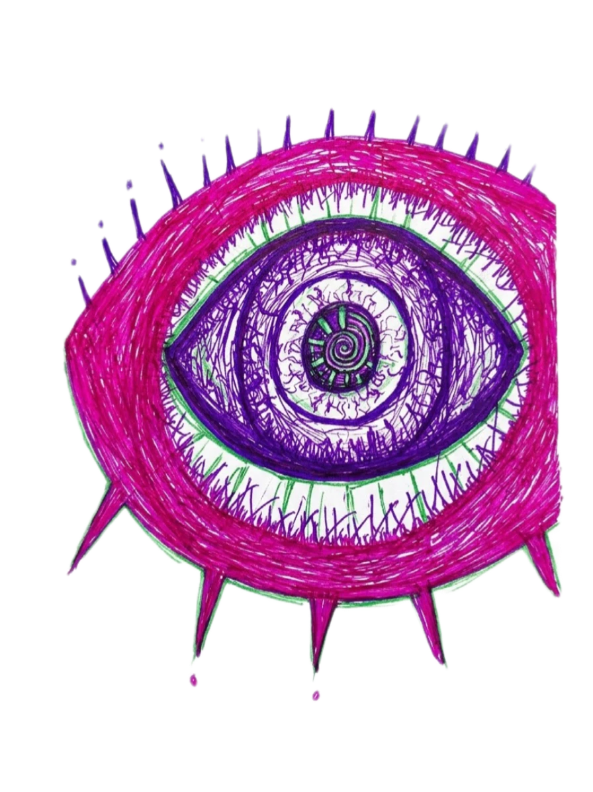

Tuba's Corner

“Where were you when I laid the foundations of the earth? Tell me, if you have understanding.”
— God to Job, Job 38:4


PIA
“Where were you when I laid the foundations of the earth? Tell me, if you have understanding.”
— God to Job, Job 38:4